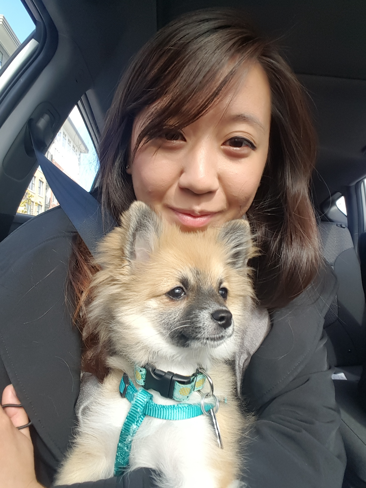

a brief timeline with some fascinating tidbits about me
In December 1991, I was born in beautiful Richmond, BC, to immigrant parents. I was raised in Richmond and have lived there for most of my life. People will often ask me if I speak Chinese and the answer to that is effectively 'No'. I understand maaaaybe a little bit. My dad speaks French and my mom speaks Chinese. The only common language we use at home is English. Here's a picture of me with my dog, Cola.
The best vacation I have ever had is hands-down visiting my dad's home country of Mauritius. It's this tiny island on the south east coast of Africa. The island is surrounded by a coral reef so you can walk out 100m from the beach and still be waist deep in clear water. It was the first time my dad had been back since he immigrated to Canada and people from his village still remembered who he was. It was amazing to me how different island-living is from the hustle and bustle of the city. Click the picture for additional information about Mauritius!
My first retail job was at Aeropostale. I worked there for 3 years part-time while I studied in university and it is in this store that I developed my secret talent: folding laundry. I can fold XS-XXL shirts all to the same size in one stack. Very. Quickly.
In 2016, I came home from Calgary and passed the nursing license exam to become a registered nurse. Shortly afterward, I got hired into Fraser Health and have worked with them since then at the Surrey Memorial Hospital.
When I'm not working, I enjoy training Brazilian jiu-jitsu at Pacific Top Team in Richmond. I'm at the gym a couple times a week and have collected 4 stripes on my white belt since I started.
In April, I will be starting the fullstack development program with RED Academy. I'm looking forward to gaining the skill set to create applications that can improve and promote healthy living through everyday technology.